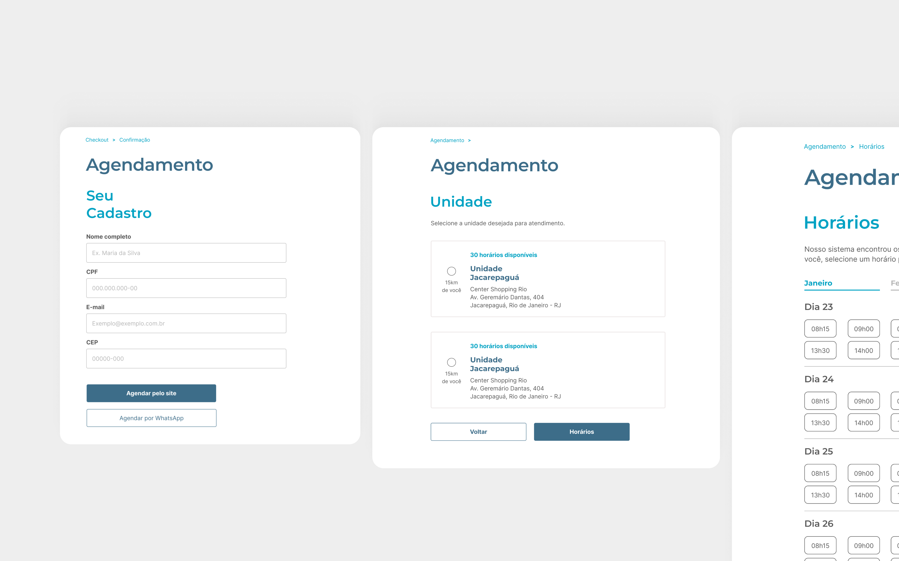
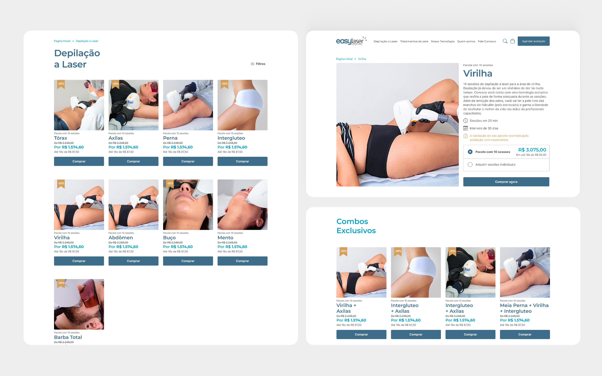
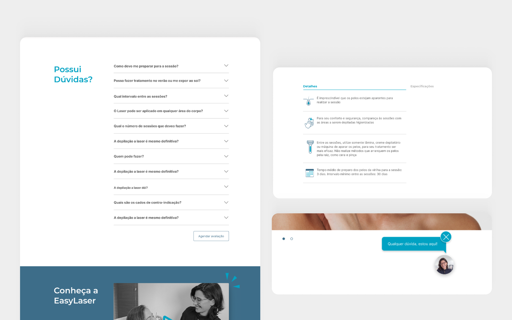
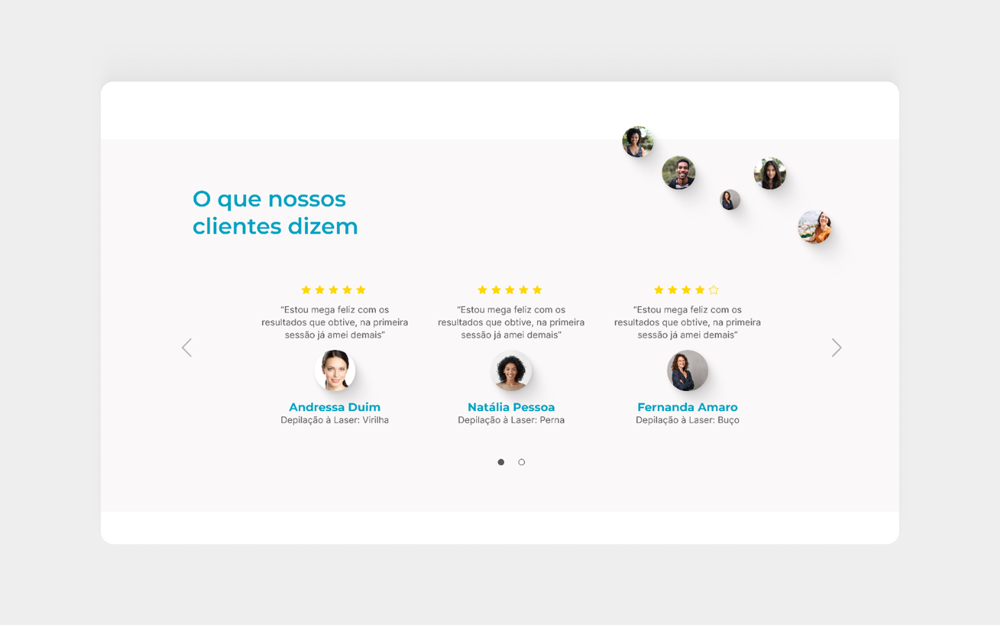

02 — A Solução
02 — The Solution
Uma plataforma limpa, com o agendamento tirado do WhatsApp.
A clean platform, with scheduling out of WhatsApp.
Uma plataforma responsiva e direta, com nova navegação, novo fluxo e um layout redesenhado do zero — preservando a essência e a qualidade da marca.
A responsive, straightforward platform, with new navigation, a new flow, and a layout redesigned from scratch — while preserving the brand's essence and quality.

Categorização por tratamento. Uma nova arquitetura de informação (validada com card sorting) e um campo de busca substituem o PDF de FAQ e o menu confuso de antes.
Treatment-based categorization. A new information architecture (validated with card sorting) and an on-site search field replace the old FAQ PDF and confusing menu.

Agendamento sem WhatsApp. Depois da compra, o cliente escolhe e garante o horário da avaliação direto no site.
Scheduling without WhatsApp. After purchase, the client picks and confirms their evaluation slot directly on the site.

Sessões avulsas e combos. O cliente escolhe comprar uma sessão única ou montar um combo com desconto, sem depender de um pacote fechado.
Single sessions and combos. Clients choose to buy a single session or build a discounted combo, without being locked into a fixed package.

Dúvidas esclarecidas. Tanto as dúvidas sobre contraindicações quanto sobre os procedimentos são respondidas sem sair do site — pelo chat, pela página do produto ou pela seção de perguntas frequentes — no lugar de depender do WhatsApp.
Questions answered. Questions about both contraindications and procedures are answered without leaving the site — through chat, the product page, or the FAQ section — instead of relying on WhatsApp.

Depoimentos de clientes. Avaliações dos clientes diretamente na PDP, endereçando o medo apontado na pesquisa.
Customer testimonials. Customer reviews directly on the PDP, addressing the fear flagged in the research.